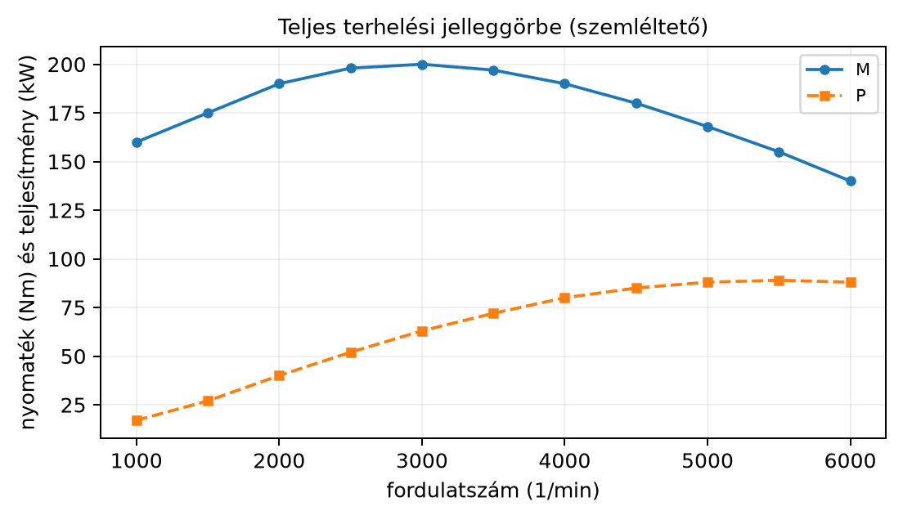

Két gyakori műhelyi panasz vezet ide. Az egyik: „gyorsításkor, kis fordulaton csilingel a motor”. A másik: „gyengébb lett, melegben sem húz, pedig a szerviz mostanában nem talált hibát.” Az első a kopogásos égés irányába mutat, a másodiknál előbb-utóbb a motorjelleggörbék és a hengerenkénti kompresszió mérése kerül elő. A diagnosztikai műszer élő adatai, a gyújtásszög-korrekció és a jelleggörbe leolvasása itt nem papírmunka: ezek döntik el, hogy a motornak csak új gyújtógyertyára, kopogásérzékelőre, vagy komoly mechanikai javításra van szüksége.
Ebben az alfejezetben az égés lefolyását, a kopogás okait és következményeit, a teljes/részterhelési jelleggörbéket, valamint a légviszony hatását tanuljuk meg úgy, hogy közben egy kompresszió-végnyomás mérést is előkészítünk.
Képzeljünk el egy motort nagy terhelésen, például 2500 1/min fordulaton, szinte teljesen nyitott fojtószeleppel. A szívóütemben a hengerbe került keveréket a kompresszió összenyomja; röviddel a felső holtpont előtt a gyújtógyertya szikrája lángot indít. A lángfront a gyertya felől gömbhöz közelítő felületként terjed, mögötte forró, leégett gáz, előtte még hidegebb, el nem égett keverék van. A hengernyomás a kompresszió miatt eddig is emelkedett, most az égés felszabaduló hője meredekebb nyomásemelkedést ad. Jó esetben a nyomáscsúcs éppen a felső holtpont környékére esik, így a gáz a dugattyút a leghatékonyabban tudja lefelé nyomni.
A másik, jól ismert kép a teljes terhelési jelleggörbe: a nyomaték (M) és a teljesítmény (P) fordulatszám szerinti ábrája. Az alábbi ábra egy szívó benzinmotor szemléltető görbépárját mutatja:

A görbén a nyomaték előbb éri el a csúcsát, mint a teljesítmény, mert a teljesítmény a nyomaték és a fordulatszám szorzata.
Definíció. A szikragyújtású motor normál égése olyan égés, amelyet a gyújtógyertya szikrája indít el, és amelyben a lángfront a keveréken rendezetten, detonációmentesen terjed át.
A folyamatot három fő szakaszra bonthatjuk:
Összefüggés. A gyújtásszöget úgy állítják be, hogy az égés fő hőfelszabadulása a felső holtpont környékére essen. Túl késői gyújtásnál a csúcsnyomás lecsúszik a munkaütem elejére, így csökken a forgatónyomaték; túl korai gyújtásnál a még felfelé mozgó dugattyú ellen dolgozik az égés, és nő a kopogás veszélye.
A bal oldali diagramon a pontozott görbe a gyújtás nélküli (motorozott) sűrítés, a csúcsa az FHP-n van. A helyes gyújtásnál (szikra kb. 20° FHP előtt, utána rövid gyújtási késedelem) a nyomáscsúcs kb. 10–15°-kal FHP után alakul ki; túl korai gyújtásnál magasabb, az FHP-hoz közeli csúcs, túl későinél alacsonyabb és később kialakuló csúcs adódik. A jobb oldali nagyítás a kopogásos égés nyomáslengését mutatja a csúcs körül. Az adatok szemléltető modellből származnak. A HTML-változatban a gyújtásszög csúszkával állítható, és a kopogás be- és kikapcsolható.
Definíció. Kopogásos égésnek (knocking; műhelyi szóval „kopogás”, „csilingelés”) nevezzük, amikor a szikragyújtású motorban a még el nem égett keverék egy része a normál lángfront megérkezése előtt öngyullad, és gyorsan, detonációszerűen ég el.
A kopogás nem tévesztendő össze a dízelmotor öngyulladásos elvével: ott az öngyulladás a tervezett gyújtási mód, itt viszont nemkívánatos, mert a hengerben nyomáshullámok keletkeznek.
A tipikus okok:
Figyelem. A tartós kopogásos üzem hő- és mechanikai túlterhelést okoz: megéghet a dugattyútető, olvadhat a dugattyú pereme, károsodhatnak a csapágyak és a hengerfejtömítés. A kopogás nem egyszerű kényelmetlenség, hanem motorroncsoló folyamat is lehet.
A korszerű motorok kopogásérzékelőt használnak. Ez a hengertömbre szerelt rezgésérzékelő a kopogásra jellemző kopogási frekvenciájú rezgést érzékeli. A motorvezérlő a kopogás intenzitása alapján hengerenként késlelteti a gyújtást, és a kopogás megszűnte után óvatosan visszaállítja azt. A szerelőnek ezért ha kopogást tapasztal, nem elég a tankolt üzemanyagra hivatkozni: ellenőrizni kell a kopogásérzékelő jelét, a tényleges gyújtásszöget, a hűtőrendszert és a hengerek mechanikai állapotát.
Előírás. A kopogásszabályozás gyújtásszög-határértékeit és a kopogásérzékelő meghúzási nyomatékát mindig a gyártói javítási adatból vegyük (ellenőrizendő: gyártói adat).
A motorjelleggörbék azt mutatják meg, hogyan alakul a nyomaték, a teljesítmény és a fogyasztás a fordulatszám és a terhelés függvényében.
Definíció. A teljes terhelési jelleggörbe a nyomaték, a teljesítmény, adott esetben a fajlagos fogyasztás alakulása a fordulatszám függvényében teljesen nyitott fojtószelep (szívó Otto-motor) vagy maximális befecskendezési mennyiség (dízel) mellett.
A nyomaték és teljesítmény kapcsolata:
ahol a teljesítmény W-ban, a nyomaték Nm-ben, a fordulatszám 1/min-ben. Ebből következik, hogy alacsony fordulaton a nyomatékból számolt teljesítmény kicsi, magas fordulaton ugyanakkora nyomaték nagyobb teljesítményt ad.
Szívó Otto-motor nyomatékgörbéje jellemzően közepes fordulatszám-tartományban éri el a maximumát. Alacsony fordulaton a töltetmozgás és a töltéscsere romlik, magas fordulaton a szívórendszer, a szelepek és a súrlódás növekedése korlátoz. Dízelmotornál a nyomatékgörbe gyakran laposabb, alacsony fordulaton nagyobb, de a maximális fordulatszám kisebb.
Definíció. A részterhelési jelleggörbék az állandó fojtószelepálláshoz vagy pedálálláshoz tartozó nyomaték–fordulatszám görbék. Ha a nyomaték–fordulatszám síkon az azonos fajlagos fogyasztású pontokat kötjük össze, kagylószerű zárt görbék seregét kapjuk: ez a kagylódiagram (fogyasztási jelleggörbe-mező, BSFC map). Felső határa a teljes terhelési nyomatékgörbe; a legkisebb -jű „kagyló belseje” általában közepes fordulaton, nagy terhelésen van.
A kagylódiagramon belül minden pont egy üzemállapot: a motor a teljes terhelési görbe alatti tartományban dolgozik, és a pont helyéből leolvasható a fajlagos fogyasztás. A gyenge, „nem húzó” motor gyakran azért marad el az elvárttól, mert a teljes terhelési görbe megsüllyed az elvárt értékhez képest.
Az ábra felső vastag vonala a Szemléletes kép nyomatékgörbéje (160…200…140 Nm). Alatta a kagylók az állandó fajlagos fogyasztás vonalai (250, 270, 300, 350, 450 g/kWh – kitalált, szemléltető értékek): a legkisebb fogyasztás kb. 2500–3500 1/min és 150–180 Nm környékén van, kis terhelésen a meredeken nő. A szaggatott hiperbolák az állandó teljesítmény (20, 40, 60 kW) vonalai, mert . A jelölt munkapont (2000 1/min, 80 Nm) teljesítménye kb. 16,8 kW. A HTML-változatban a munkapont húzható, és a kijelző mutatja az , , és a becsült értékét.
Továbbvitt eredmény. A jelleggörbék leolvasását, a nyomaték–teljesítmény átszámítást és a kagylódiagram értelmezését használjuk a Kétütemű Otto-motorok, a Tüzelőanyag-ellátás, a karburátor és a mechanikus befecskendezés (régi járműveken), a(z) A kipufogógáz összetétele, motoroldali kibocsátáscsökkentés és kipufogógáz-visszavezetés, a Gyújtóberendezések: a hagyományostól a teljesen elektronikus gyújtásig és a Diagnosztikai alapfogalmak és a motor mechanikai állapotvizsgálata alfejezetekben.
A légviszony a tényleges levegő–tüzelőanyag arány és az elméleti, sztöchiometrikus arány hányadosa:
Benzinnél a sztöchiometrikus keverék. A hatása a nyomatékra és fogyasztásra:
A gyakorlati motorvezérlés a legtöbb üzemállapotban környékén szabályoz, mert a háromutas katalizátor ott tisztítja egyidejűleg a CO-t, a HC-t és az NOx-ot. Teljes terhelésen viszont a maximális nyomaték érdekében a vezérlő enyhén dús keverékre állhat, míg enyhe részterhelésen, lassításkor szegényebb keveréket is engedhet.
A hengertömítettség gyors, hagyományos vizsgálata a kompresszió-végnyomás mérés. Az összenyomást közelítőleg politropikus folyamatnak tekinthetjük:
ahol a sűrítés kezdeti nyomása, a sűrítési arány, a politropikus kitevő (hideg, lassú indítózásnál gyakran körüli szemléltető érték). A képlet felső becslést ad: a valós motoron a szelepzáródási idő, a hőveszteség, az átfúvás és a tömítetlenség miatt a mért érték elmarad az elméleti, tökéletesen zárt hengerrel számított értéktől.
Figyelem. A kompresszió-végnyomás mérés során az indítómotor forgatja a motort, ezért a gyújtást és az üzemanyag-befecskendezést ki kell iktatni, a váltót üres állásba kell tenni, és a forgó részek közeléből mindent el kell távolítani.
1. példa – teljesítmény számítása nyomatékból.
Adott:
,
.
Keresett:
.
Nagyságrend-ellenőrzés: egy 2 literes szívó benzinmotor teljes terhelésen 3500 1/min fordulaton 70–80 kW teljesítménye reális szemléltető érték ∎
2. példa – effektív középnyomás
visszaszámítása.
Ugyanaz a motor,
.
Az effektív középnyomás négyütemű motornál:
Behelyettesítve:
Ez a szemléltető érték a közepes fordulatszámú nyomatékcsúcs környékén realistának tekinthető, de a pontos gyártói jelleggörbéből kell ellenőrizni.
A jelleggörbe leolvasásánál mindig a mért fordulatszámhoz tartozó gyártói referenciaértékhez viszonyítsunk. A diagnosztikai műszer élő adataiban a tényleges nyomatékot a motorvezérlő becsli; a valós mechanikai állapotot azonban a kompressziómérés, a hengerszivárgás-mérés és a próbaút erősíti meg.
Kompressziómérés előtti ellenőrzőlista:
Valós eset. Egy szívó benzinmotoros autó tulajdonosa arra panaszkodik, hogy „gyorsításkor csilingel, és melegebb időben romlik az ereje”. A műhelyben először a hibakód-memóriát olvassák ki: kopogásszabályozás miatti gyújtásszög-késleltetés látszik. A műszer élő adataiban a kopogásérzékelő jele nagy, a gyújtásszög hengerenként jelentősen későbbre áll. A kompressziómérés hengerenként 13,0; 12,8; 13,1; 9,2 bar szemléltető értékeket ad. A gyártói adat szerint a megengedett eltérés például ±10–15% – az utolsó henger kiesik. A hiba a hengertömítettség és/vagy szelepzáródás romlása, amit hengerszivárgás-méréssel tovább lehet pontosítani. A javítás hengerfej-felújítás vagy dugattyúgyűrű-állapot rendezése lehet. A tanulság: a kopogás nem mindig üzemanyagprobléma; a mechanikai állapotromlás is emelheti az égési hőmérsékletet és a kopogáshajlamot.
Cél: a hengerek tömítettségének gyors, összehasonlító vizsgálata.
Jármű- és adatazonosítás: típus, motorszám, hengerűrtartalom, sűrítési arány, gyártói referenciaértékek.
Szerszámok, mérőeszközök: kompressziómérő megfelelő csatlakozóval, gyújtógyertya-kulcs, nyomatékkulcs, diagnosztikai műszer, akkumulátor-töltő.
Anyagok: ha szükséges, új gyújtógyertya-tömítés, a gyártó által előírt gyertyahézag-ellenőrzés.
Biztonsági korlát. A feladat tanműhelyi környezetre, oktató felügyeletére és a gyártói javítási utasítás betartására vonatkozik; a megadott értékek tanulási példák.
Munkavédelmi és környezetvédelmi lépések: előkészítés alatt (gyertyák kiszerelése, mérő csatlakoztatása) gyújtás ki, kulcs a zsebünkben; indítózás csak akkor, ha a gyújtás és a befecskendezés hatástalanítva van, a mérő csatlakoztatva, és senki sincs a forgó részek (szíjhajtás, ventilátor) közelében, a kulcsot vagy az indítógombot pedig az működteti, aki a mérőt figyeli, vagy egyértelmű szóbeli jelre; váltó üresben, kéziszerszámok ne lógjanak a forgó részek közelébe. A motortérben üzemanyaggőz lehet, ezért nyílt láng és szikra tilos. Az akkumulátor csatlakozóit csak a gyártói előírás szerint szabad bontani; a negatív pólus legyen az első.
Számozott munkalépések:
A rajz (a) része a kompressziómérő részeit mutatja (manométer, visszacsapó szelep, leeresztőgomb, nyomótömlő, menetes csatlakozócső vagy gumikúp), a (b) képsor a 3–7. munkalépést, a (c) mintajegyzőkönyv a Valós eset szemléltető értékeit (13,0; 12,8; 13,1; 9,2 bar): a 4. henger kb. 29 %-kal marad el a többi átlagától. A HTML-képsor 4. lépésében a mutató ütemenként lépcsőzetesen emelkedik.
Ellenőrzési pont: minden henger mérési értéke a gyártó által megadott tartományban legyen, a hengerek közötti eltérés ne haladja meg az előírt százalékot (például 10–15%, ellenőrizendő). A mérés után a gyertyákat a gyártói nyomatékkal szerelje vissza.
Tipikus hibák: nem teljesen nyitott fojtószelep, lemerült akkumulátor, a befecskendezés elmulasztott kiiktatása, a mérőcső rossz tömítése, az értékek hengersorrend nélküli feljegyzése.
Dokumentálás: munkalapon rögzíteni kell a hengerszámot, a mért értékeket, a motor hőmérsékletét, a forgatási ütemek számát és az esetleges rendellenességeket.
1. feladat (A)
Definiálja a kopogásos égést, és nevezzen meg két okát.
2. feladat (A)
Egy motor teljes terhelési görbéjén
4000 1/min fordulaton. Számítsa ki a teljesítményt kW-ban.
3. feladat (B)
A fenti chart görbéről állapítsa meg, körülbelül hány 1/min-nél adja le
a szemléltető motor a legnagyobb nyomatékot, és hány 1/min-nél a
legnagyobb teljesítményt. Indokolja a különbséget a képlet alapján.
4. feladat (B)
Egy
()
motor nyomatéka 3000 1/min-nél 145 Nm. Számítsa ki az effektív
középnyomást bar-ban.
5. feladat (C)
Kompresszióméréskor a négy hengeren 12,6; 12,4; 12,7; 10,1 bar értékeket
mértek. A gyártói határérték 12–14 bar, a hengerek közötti megengedett
eltérés 15%. Melyik henger gyanús, és miért? Milyen következő
vizsgálatot javasolna?
6. feladat (D)
Egy szívó benzinmotor gyorsításkor kopog, a diagnosztikai műszer nagy
kopogásszabályozási késleltetést mutat, de a hűtőfolyadék hőmérséklete
normális. Soroljon fel legalább három további ellenőrzési lehetőséget a
gyújtás, a keverékképzés és a mechanikai állapot területén.
1. feladat.
Kopogásos égés: a szikragyújtású motorban a lángfront előtt álló
keverékrész öngyullad. Két ok: alacsony oktánszámú benzin, túl nagy
sűrítési arány/forró égéstér.
2. feladat.
.
.
3. feladat.
A nyomaték maximuma kb. 3000 1/min-nél, a teljesítmény maximuma kb. 5500
1/min-nél van. A teljesítmény azért tolódik feljebb, mert
;
a nyomaték ugyan csökken, de a fordulatszám még jobban nő.
4. feladat.
.
5. feladat.
A 4. henger gyanús: a 10,1 bar a 12–14 bar-os gyári tartomány alatt van,
és a többi három henger átlagától (12,6 bar) kb. 20 %-kal (a legnagyobb
értéktől, 12,7 bartól 20,5 %-kal) marad el, ami meghaladja a 15 %-os
példaértéket. (A viszonyítás alapját – legnagyobb érték vagy átlag – a
gyártó adja meg.) Javaslat: hengerszivárgás-mérés, illetve az alacsony
nyomás okának elkülönítése (szelepzáródás, gyűrűtömítés,
hengerfejtömítés).
6. feladat.
Ellenőrizendő például: a gyújtásszög-alapjel és a kopogásérzékelő jele;
a gyújtógyertyák hőértéke és állapota; a befecskendezés és a
légviszony-érzékelő, mert tartósan szegény keverék kopogást okozhat; a
kompresszió-végnyomás és a hengerek tömítettsége; valamint az égéstérben
lerakódás vagy forró pont.
A szikragyújtású motorban a szikra által indított lángfront a gyújtási késedelem után rendezetten terjed át a keveréken. A kopogásos égés az el nem égett rész öngyulladása; okai között az alacsony oktánszám, a túl nagy sűrítés, a korai gyújtás, a forró pont és a szegény keverék szerepel. A kopogásérzékelő a gyújtásszöget hengerenként visszaveszi. A teljes terhelési görbén a nyomaték maximuma alacsonyabb, a teljesítmény maximuma magasabb fordulatszámon van, mert . A részterhelési görbék kagylódiagramot adnak. A légviszony hatása: enyhén dús keveréken nagyobb nyomaték, kissé szegény keveréken kedvezőbb fogyasztás érhető el. A kompresszió-végnyomás mérés a hengertömítettség gyors vizsgálata; az értékeket a gyártói adathoz és egymáshoz kell hasonlítani. A jelleggörbék olvasása és a kompressziómérés a későbbi motor-, gyújtás- és diagnosztikai alfejezetekben visszatérő alap.